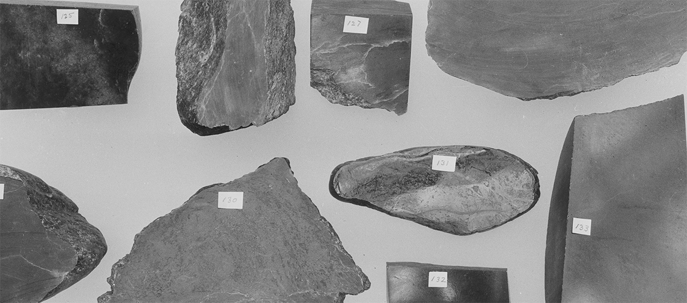

Federico Rossin parle d'Histoires des formes

Une joie cinéphile
Il me semble qu’il aurait été obscène de prétendre qu’il s’agit d’une année comme une autre. Histoires des formes est une méta-programmation où le spectateur est mis face au manque, à l’impossibilité de faire un festival. Pour moi c’est une manière de dire : ça n’aura pas lieu, mais ça a déjà eu lieu. Il a fallu tout repenser à partir de ce passé, regarder derrière nous mais aussi vers l’avant en créant quelque chose de nouveau : une manière de traverser l’histoire qui ne soit plus diachronique ni géographique. J’ai fait un travail de morphologue : un itinéraire qui rend compte des variations d’un même motif, d’une même typologie, comme l’essai filmique, par exemple. J’étudie la manière dont se déploie une mémoire culturelle.
C’est à la fois un hommage au travail d’autres programmateurs d’Histoire de doc comme Kees Bakker et une traversée de celles que j’ai faites, mais aussi un moment de questionnement sur le geste de programmation.
Je viens à Lussas depuis 2008 et y travaille depuis 2009. J’ai suivi comme spectateur toutes les programmations de Kees Bakker. J’ai à présent des archives conséquentes de toutes les programmations, des dizaines de milliers de films. D’habitude dans Histoire de doc, j’engage un véritable travail d’historien. Il faut à la fois étudier l’histoire du pays, l’économie, la société ; se rendre dans le pays lorsque c’est possible pour aller dans les archives, les cinémathèques. Ce voyage dans ma chambre et à l’extérieur dure environ six ou sept mois pour appréhender toute cette matière, lire, et voir six ou sept cents films par pays.
Pour Histoires des formes j’avais donc devant moi les catalogues et les archives d’Histoire de doc des années précédentes, avec l’envie de faire partager cette mémoire filmique. À partir de là, j’ai fait un travail de remémoration et de revisionnage des films.
Dans ce contexte, tous les films sont évidemment des documents. Prenons l’exemple de la RDA, car il s’agissait d’une dictature ouvertement stalinienne jusque dans les années 1960. Regardez cette ville de Karl Gass, qui défend en 1962 la construction du mur de Berlin, est l’exemple d’un film en apparence irrecevable car bourré de propagande. Avoir une lecture lente des documents me permet alors de repérer dans les films la marge de manoeuvre qu’ont les réalisateurs malgré la censure. Certains éléments dénoncés dans le film — la présence d’anciens nazis dans les institutions, l’Ouest ami du capitalisme sauvage et des Américains — apparaissent troublants de vérité aujourd’hui alors qu’on les prenait à l’époque pour de la propagande. Plus on est historien, moins les choses sont tranchées, plus il y a des nuances, plus on lit entre les lignes, dans les espaces blancs et les silences. Ce film est par ailleurs un chef-d’oeuvre formel, avec un montage pyrotechnique, eisensteinien ; pour le comprendre il faut le remettre dans son contexte et pouvoir ainsi sentir sa modernité par rapport au cinéma occidental de l’époque.
L’histoire du cinéma documentaire est encore à écrire, car le peu qui existe se borne selon moi à des cinéastes et des films que tout le monde connaît. Une telle histoire mérite un travail sur les archives qui reste à faire. On se contente aussi d’idées reçues, les frontières restent donc fermées et les films sont toujours les mêmes. La première séance d’Histoires des formes, « De la mise en scène », retrace l’histoire de l’acteur dans le cinéma documentaire. Elle mélange un film des années 1940 plutôt classique mais magistral, un film de la Pologne stalinienne des années 1950, un film de la Nouvelle Vague des années 1960. Il s’agit de balayer d’emblée une posture anti-historique qui ferait de la présence d’un acteur dans le cinéma documentaire d’aujourd’hui quelque chose d’audacieux alors que cela existe depuis L’Affaire Dreyfus de Georges Méliès. L’enjeu est de déceler les germes, les bactéries documentaires là où l’on pensait voir une vie purement fictionnelle. Je dis souvent à mes étudiants qu’il y a beaucoup plus de documentaire qu’on ne pense. Une des choses les plus importantes du métier d’historien, c’est d’élargir le corpus. Par contre, loin de moi l’idée d’effacer les frontières entre fiction et documentaire. Je tiens à me démarquer immédiatement d’une lecture postmoderne de cette séance. Je ne suis pas du tout d’accord avec l’idée que la vérité n’existe pas, que fiction et documentaire, c’est du cinéma. Comme disait Arnaldo Momigliano, la recherche de la vérité dans l’opération de l’historien est fondamentale. Une vérité existe, elle est là. En tant qu’historien ou réalisateur on doit essayer de la faire ressortir, et pour cela, peu importe la méthode que l’on utilise.
Je cherche à poser des problèmes théoriques à travers les films. Les faits rapportés dans Le village silencieux ont existé, le massacre et les déportations ont vraiment eu lieu. Comment figurer cela ? Des mineurs du pays de Galles jouent le rôle de leurs frères prolétaires de Tchécoslovaquie pour leur rendre hommage. C’est un acte documentaire et politique extraordinaire. Attention les hooligans ! montre que dans cette société complètement fictionnelle qu’est la Pologne des années 50, la seule manière de contrebalancer l’image lisse de la réalité véhiculée par la propagande du parti, était d’utiliser la fiction pour faire ressortir la vérité sociale du pays. Dans l’internat d’une usine textile pour jeunes filles d’Un sac de puces, Věra Chytilová décide de jouer avec elles, de les placer dans la fiction pour essayer d’atteindre leur intime le plus profond. Le théâtre les protège de l’indiscrétion de la caméra et les rend libres ; la fiction détruit les barreaux de l’institution. Qu’aurait fait un documentaire télé classique ? Il aurait lissé l’image de ces filles et de l’internat. Il fallait comme un liquide révélateur dans le bain documentaire, un petit liquide fictionnel. En commençant par la mise en scène pour aller vers l’éthique, dans la dernière séance, on ouvre les frontières des possibilités ou impossibilités de faire documentaire.
Dans le travail d’historien il y a toujours plusieurs manières d’articuler la narration avec la recherche de la vérité. Delio Cantimori a travaillé sous le fascisme en cachant ses convictions communistes. Il disait qu’un simple historien répond à des questions sur les documents alors qu’un grand historien leur pose de nouvelles questions. Les historiens s’accordaient pour dire que les récits retranscrits durant les procès de sorcellerie au Frioul au XVIe siècle n’étaient pas fiables parce qu’extorqués sous la torture. Dans les années 1960, l’historien Carlo Ginzburg formule une nouvelle interprétation : si l’on y prête attention, entre les lignes de la confession se trouvent des traces des croyances populaires de l’époque. Ces documents méritaient un autre niveau de lecture.
C’est là qu’intervient la subjectivité de l’historien. Le corpus est là, je n’ai pas à inventer de nouveaux films, mais à essayer plutôt de poser de nouvelles questions au cinéma et au spectateur. Dissocier les films de l’histoire de leur pays et les réagencer en fonction d’axes nouveaux les fait rayonner dans de nouvelles constellations. À vingt ans j’étais critique de cinéma, aujourd’hui, je suis historien et j’écris des essais à chaque fois que je fais une programmation. L’agencement des films est une forme d’écriture et de pensée en acte. Depuis quinze ans, à travers mes programmations, mon désir a été d’ouvrir, de requestionner, pour trouver aussi un certain plaisir à raconter des histoires. Le mot qui résume cela, c’est le montage. Je construis chaque séance avec un rythme et un motif. Ce n’est pas simplement thématique, ce sont des rimes, des résonances musicales. Si on met une virgule dans un texte il y a déjà montage. Comme le remarquait Marcel Proust à propos de L’Éducation sentimentale, toute la beauté de l’écriture tient dans un blanc. Lorsque Flaubert écrit « Et Frédéric, béant, reconnut Sénécal ! » puis, après un espace blanc, « Il voyagea », c’est du montage. Dans ce blanc s’écoule des années de vie. La programmation elle aussi peut être à la hauteur de cela.
L’objet du cinéma documentaire c’est le réel, pas la réalité. La question centrale de mon travail d’historien du cinéma, et en particulier du cinéma documentaire, est celle du réel. C’est pour cette raison que dans Histoires des formes il n’y a pratiquement pas de cinéma direct (à l’exception de Psychodrame de Marek Piwowski). Le direct a eu le grand mérite de nous plonger dans la réalité, mais il a trop souvent oublié le réel. Johan van der Keuken affirmait ne jamais faire de cinéma direct. Le réel est ce qui surgit de la distorsion qu’opère tout regard sur la réalité. Le documentaire, ce n’est pas le document. L’enregistrement mécanique et indexical de la réalité n’est pas la garantie du documentaire. Ce qui m’intéresse, c’est le cinéma indirect, les liens dangereux du cinéma documentaire avec le cinéma expérimental et la fiction. Je ne pense pas qu’un entretien puisse épuiser la vie de quelqu’un, la pensée de quelqu’un. Il faut aborder cette vie et cette pensée avec un regard prismatique qui réagence le réel par le montage, par le travail formel d’images et de sons, car c’est ce qui donne forme et présence au visible. Dans la séance « Politique de l’essai », le travail formel de Jørgen Leth (La vie au Danemark, 1971), lui permet justement de porter ce regard impitoyable de sociologue à la Baudrillard sur nos vies occidentales, nos vies en plastique, nos vies en boîte, de consuméristes. La mise en scène, le cadre, le fond noir, rendent visibles ce que des entretiens normaux n’auraient jamais pu montrer.
La forme, c’est le véritable contenu du film. Le contenu en soi n’existe pas, c’est de l’anecdotique.
Ce n’est pas uniquement l’histoire qui compte, mais aussi, comme le disait Paul Veyne, Comment on écrit l’histoire, comment on tourne, comment on met en scène les choses pour les révéler et les figurer et pas seulement les montrer. Tolstoï, pour parler de la Russie du XIXe siècle, a écrit Le Cheval. Cette nouvelle raconte le point de vue d’un cheval sur sa propre vie. Il ne comprend pas la question de la propriété privée, elle n’a pas de sens pour lui — Tolstoï était communiste, à sa manière. À nous lecteurs, ce déplacement de point de vue révèle que la propriété privée en soi est insensée. Nous voyons le monde autrement. De quel point de vue, avec quel langage, avec quelle tonalité peut-on faire résonner les choses, pour qu’elles signifient à nouveau, pour qu’elles nous apparaissent autrement ? Là se révèle la forme.
Cette séance « Questions d’éthique » regroupe des films qui ont provoqué le débat, qui n’ont pas laissé indemne le spectateur. Ils s’attachent à rendre la violence, l’intime, la blessure profonde et la dévastation sociale, tout en défiant le voyeurisme, la pitié à quatre sous et la jouissance sadique du spectateur. Cela ne veut pas dire que je suis un libertin effréné et que je pense que l’on peut tout faire. Il y a des films obscènes et pornographiques que je déteste de tout mon coeur. Mais souvent, quand on entend crier au scandale à propos de films documentaires, c’est au nom d’une sorte d’idéologie documentaire, d’un moralisme victorien qui empêchent de voir les choses. Et surtout on se prive de la pensée et de la critique. Soit il est question d’éthique, soit il est question de morale. Moi je parle d’éthique. Les personnes qui posent des décalogues moralisateurs sur le cinéma appartiennent à une époque néo-stalinienne, qui malheureusement est la nôtre.
Ces trois films osent justement commettre le péché d’aller plus loin, chaque fois plus loin — cela a été le sens du remontage pour ce triptyque. Cela commence avec la froideur absolue du document photographique de Walter Heynowski dans Kommando 52 (1965). Le film regarde la mort en face. Ce film est un choc pour le spectateur, c’est certain, mais nous rappelle aussi qu’en Allemagne de l’Est, un réalisateur a tenté de montrer l’impérialisme occidental à l’oeuvre. Dans Psychodrame (1969), la position du réalisateur est très troublante : il pose des questions très dures, très âpres mais on le sent bienveillant. Il n’est pas juste voyeuriste, il aime vraiment ces filles. Le parti pris formel des gros plans en noir et blanc est magnifique. Il filme des filles dévastées mais belles. Elles sont belles parce que surgit une vérité chez elles, qui est la vérité des larmes, la vérité du cri, de la rébellion ; elle n’est pas écrasée par la caméra mais au contraire nous envahit. Dans Film noir (1971), Želimir Žilnik fait encore un pas de plus : il n’inclut pas uniquement sa voix dans le film mais aussi son corps, sa famille, son appartement, sa vie. Il fait exploser la posture du maître à penser. Selon moi, l’honnêteté de la position de chacun de ces réalisateurs est fondamentale. Là on peut parler d’éthique.
J’aime l’idée d’un spectateur venant à Lussas pour suivre Histoire de doc pendant trois jours, en suivant toutes les séances, qui sort de là avec cette bouffée de films et en même temps avec une connaissance du pays et une envie d’en savoir plus. Cela arrive souvent ! Pour que cela advienne, le mieux est de travailler chaque séance pour pousser le spectateur à aller voir les autres, le captiver. Chacune est comme un micro-chapitre du livre qu’est la programmation dans son entièreté. Elle se doit de donner l’accès le plus riche possible à la palette des formes de l’histoire du cinéma documentaire du pays.
Je pense que la programmation est une forme pour comprendre le monde, pas uniquement l’histoire du cinéma. Faire penser les films ensemble peut enrichir le regard d’un étudiant, d’un spectateur, d’un cinéphile. Le programmateur fait la même chose qu’un curator qui, par l’accrochage, propose un nouvelle juxtaposition des photographies ou des tableaux et donc une nouvelle lecture des œuvres et de l’artiste. Il redonne vie à ces images, grâce à la construction d’un nouvel axe de regard pour le spectateur qui entrera dans la salle de l’exposition et suivra ce parcours mental. Pour autant, on ne peut pas simplement arracher les objets que l’on propose à leur histoire, oublier les rayures du temps. Il ne faut pas que l’acte de remontage néglige la philologie, c’est-à-dire l’inscription d’une oeuvre dans le contexte qui lui est propre. C’est une exigence de lisibilité, sinon c’est l’arbitraire absolu. Je pense que l’enchaînement des films ne doit pas avoir moins d’ambition que cela.
La question pédagogique est au centre de mon travail. Le livre que j’ai composé pour accompagner la réédition du film de Vittorio De Seta, Journal d’un maître d’école (1973), est pour moi un miroir de mon travail de passeur – programmateur – historien. Donner au lecteur des clés sur la fabrication du film de De Seta est aussi une réflexion sur une méthode de travail et une tentative d’échapper à une position professorale qui resurgit parfois.
Lors des échanges avec le public, je suis présent et j’essaie de m’engager du mieux possible avec les connaissances que j’ai acquises les six mois précédents. L’accompagnement des films est un grand plaisir car leur agencement dans la séance produit déjà des questions de cinéma. Dans mes programmations, les interrogations factuelles existent évidemment mais les enjeux de cinéma sont au centre du débat. Voilà la vraie réussite d’un programme. Je trouve cela magnifique car on dépasse enfin le pur factuel, diachronique, pour arriver à autre chose. Si cela a lieu, c’est à mon sens parce que chaque opération que je fais vise cette transmission. Toutes les étapes doivent être lisibles, accessibles, réflexives, pour que le spectateur soit en mesure de me suivre à tout instant. En ce sens, je suis absolument brechtien. Cela se joue aussi dans le langage. D’ailleurs, je ne m’exprime pas dans ma langue maternelle. J’ai beaucoup moins d’expressions en français. En italien je suis plus brumeux et intellectualiste. Utiliser une langue que j’ai adoptée me permet de prendre du recul. À chaque fois, l’opération que je fais doit être une méta-opération. Il n’empêche que le plaisir est important. Il y a une jouissance qui provient du cinéma et en même temps les choses sont mises à distance. C’est exactement cela, le regard de l’historien. Faire avec le cerveau m’intéresse bien plus que faire avec ses tripes. Faire avec ses tripes, pour moi, ce n’est pas démocratique, c’est même très risqué. On peut parvenir à une joie cinéphile avec cerveau et coeur ensemble.
Alors, cette année, le vrai défi est que je ne serai pas là. J’ai réalisé des enregistrements pour accompagner les séances, mais je ne serai pas présent, ni pour répondre, ni pour défendre, ni pour partager. C’est une souffrance, mais c’est aussi un miroir de la situation actuelle, qui provoque des trous, des manques, de virulentes absences. Ne pas assumer cette rupture historique ne serait pas à la hauteur de ce qui se passe, comme de ce qui s’est passé. Plutôt qu’un débat en ligne, je préfère nettement que les séances soient condensées et puissantes, qu’elles arrivent directement au spectateur, même sans médiation. Et puis, j’ai écrit ce court édito, que je pense assez aigu pour rendre lisible ce manque, et surtout ne pas le combler.
Propos recueillis par Alix Tulipe, mardi 11 août 2020.